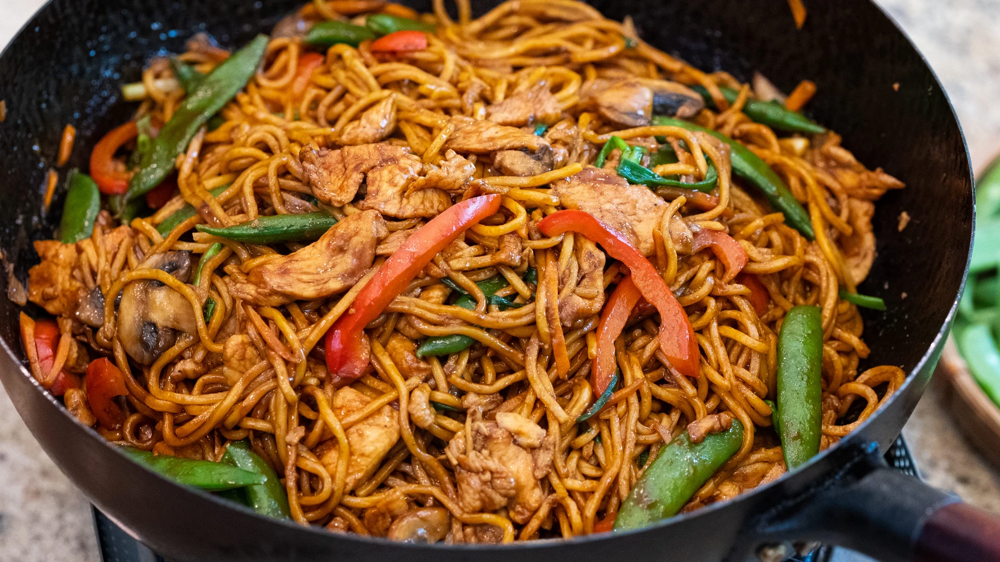

Uncle Quan's Vegan Lo Mein

You won't even miss the meat in this melange of oriental sauces, veggies and noodles
- 1 lb Chinese Wheat Noodles
- 3 TBSP Light Soy Sauce
- 1 TBSP Mushroom Oyster Sauce
- 1 TBSP Dark Soy Sauce
- 2 TBSP Sugar
- 1 tsp MSG
- 1 TBSP Cornstarch
- 4 TBSP Neutral Cooking Oil
- 16oz Mushrooms; Sliced
- 3 Cloves of Garlic; Minced
- 1 Small Knob of Peeled Ginger
- 1 White Onion; Sliced
- 4 Stalks of Green Onions; Whites and Greens cut into 1 inch segments
- 8oz Sugar Snap Peas
- 1 Bell Pepper; Sliced
- Mix together, Light and dark soy sauce, mushroom oyster sauce, sugar, cornstarch and 1 Tbsp water
- Boil noodles according to package directions
- Preheat wok on stove on highest heat possible
- Add oil to smoking Wok and swirl around
- Add Mushrooms and cook until moisture is gone
- Add onion and bell pepper and cook for 1 minute
- Add Sugar snap peas, ginger and garlic
- Once fragrant, push veggies aside, add more oil and add in cooked noodles
- Toss noodles with veggies until thoroughly mixed
- Add in sauce mixture and keep tossing
- Add in green onions, sesame oil and MSG
- Remove wok from heat and serve immediately